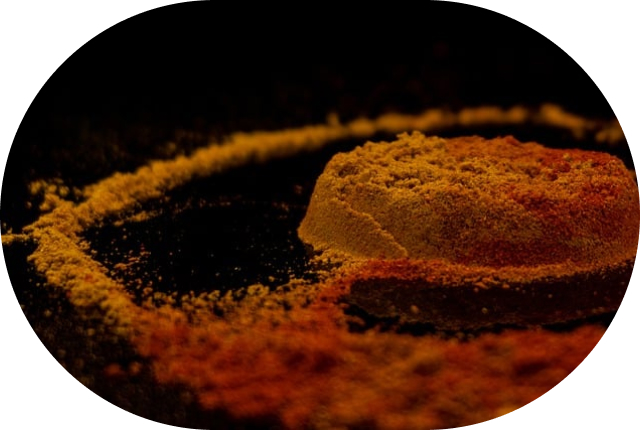
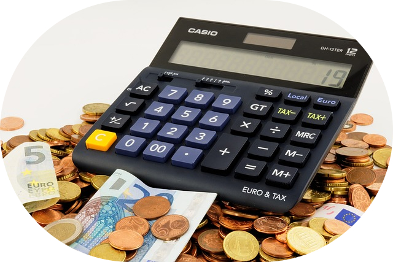
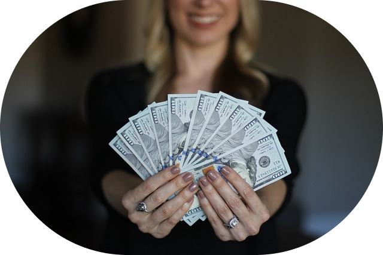

home > 창업안내 > 수익성
수익성
-

- 1.틈새맛의 비결 틈새스프
- 기성제품으로는 흉내낼 수 없는 스프를 개발하여 기존 라면과 철저한 차별성 확보
-

- 2.투자비용의 최소화
- 좁은 공간에서도 활동적인 동선을 고려한 인테리어로 투자비용은 낮추고 활용성은 높임
-

- 3.높은 소비 회전율, 현금율
- 음식의 특성상 손님들의 로테이션이 빠르므로, 저렴한 금액으로 현금 회전율이 용이
-
- 4.가족형 프랜차이즈, 과학적시스템으로 마진의 극대화
- 시스템화 된 조리법과 운영시스템으로 주방장이나 전문 인력이 필요 없는 가족형 사업으로서 인건비를 최소화, 시스템의 과학화, 표준화로 마진율을 극대화
-
- 5.강력한 브랜드 인지도
- 수십차례의 방송과 신문 및 잡지 보도는 라면의 원조로서 국내는 물론, 일본 중국등의 국내외 언론에서 검증을 받고 있으며, 해외지점 운영 및 추진으로 국내 브랜드의 인지도 및 브랜드 가치의 확립
판매량 대비 월 순마진
수익계산 근거,1인당 객 단가: 5,000원,10평 기준 좌석수 : 20석,월 영업일 30일,순수마진 : 62%이상
| 판매 | 70그릇(3.5바퀴) | 100그릇(5바퀴) | 130그릇(6.5바퀴) | 200그릇(10바퀴) | 250그릇(12.5바퀴) |
|---|---|---|---|---|---|
| 하루수익 | 350,000 | 500,000 | 650,000 | 1,000,000 | 1,250,000 |
| 한달수익 | 10,500,000 | 15,000,000 | 19,500,000 | 30,000,000 | 37,500,000 |
| 순수마진 | 6,510,000 | 9,300,000 | 12,090,000 | 18,600,000 | 23,250,000 |
기대대비 월 순마진 현황
| 판매 | 3개월(90일) | 6개월(180일) | 9개월(270일) | 12개월(360일) |
|---|---|---|---|---|
| 70그릇 | 19,530,000 | 39,060,000 | 58,590,000 | 78,120,000 |
| 100그릇 | 27,900,000 | 55,800,000 | 83,700,000 | 111,600,000 |
| 130그릇 | 36,270,000 | 72,540,000 | 108,810,000 | 145,080,000 |
| 200그릇 | 55,800,000 | 111,600,000 | 167,400,000 | 223,200,000 |
| 250그릇 | 69,750,000 | 139,500,000 | 209,250,000 | 279,000,000 |